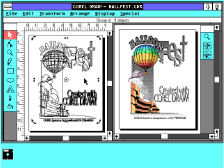
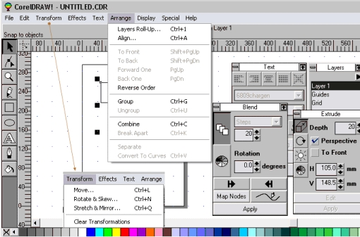
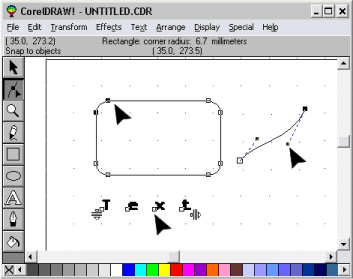
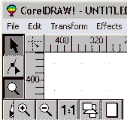
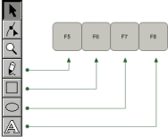
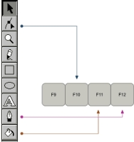
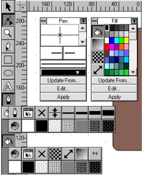

Первая версия CorelDRAW!
Первая версия CorelDRAW!
CorelDRAW Keys
Первая версия CorelDRAW! (не скажу, когда из названия исчез
восклицательный знак, но такой императив был характерен для программы на
протяжении длительного времени). Важно обратить внимание на
нехарактерный для других программ даже времени Windows 2.x каркасный
режим работы как основной. Для просмотра результата нужно было вызывать
специальное окно, занимающее правую или нижнюю половину экрана.
Представьте себе эту картину на 14-дюймовом мониторе с разрешением
800х600 в 16-ти цветной среде...

Программа производила очень тягостное впечатление, особенно на фоне
Designer’a третьей версии в тех же Windows «двойке», но лихая работа со
шрифтами, поворотом объектов и еще каких-то пару вещей на меня
определенное впечатление произвели. Важно иметь в виду бесспорную
актуальность инструмента Zoom для таких условий. Панель инструментов, как
видите, в третьей версии по виду — та же:

В третьей версии, в которой активно использовались ускоряющие аккорды, я
вывел на экран распахивающиеся панели Roll-Up, которые были важной
изюминкой программы и просуществовали с 1992-го довольно долго. Вызов
этих панелей был возможен с помощью клавиатурных пар и выглядел
примерно так.
Панель слоев вызывалась на Ctrl+1, на Ctrl+2 вызывалась панель для
оформления текста. Эти же пары клавиш служили для активации (вывода на
первый план) панели на экране. Панель экструзии вызывалась уже по другому
принципу, с помощью пары Ctrl+E, Blend — с помощью пары Ctrl+B. Если
учесть, что такой же принцип использовался и для действий (Fit Text to Path —
Ctrl+F), то логика разработчиков UI представляется достаточно загадочной.
На экране имеется еще пара открытых меню, чтобы обратить ваше внимание
на старое состояние системы акселераторов, которая потом пришла в
противоречие с системой клавиатурных команд операционной среды.
Возможно, клавиатурные пары в меню Transform указывают также на попытку
разработчиков использовать буквы, подходящие для визуальных ассоциаций.
В этой версии уже была любопытная операция с линейкой и мышкой (по
щелчку вызывалось диалоговое окно настроек) и дублирование объекта при
переносе в нужное место со щелчком правой клавишей мыши.
Панель инструментов нельзя было убрать (статус-строку вверху и палитру
цветов — можно было), так что пространство для работы полностью не
открывалось. Вызов инструментов осуществлялся с помощью функциональных
клавиш, при этом разработчики распределили их на три блока. Этим и
займемся.
Первый блок был закреплен за инструментом Zoom , второй — собственно
рабочие инструменты, третий — Preview и панели оформления.
Инструмент указания (выбора), безусловно, частотный и имеющий массу
примеров такого же приоритетного расположения, закреплен за клавишей
пробела с придачей ему клавиши Tab . Клавиша пробела обеспечивала также
ротацию между инструментом выбора и текущим инструментом. Удобно, но
внесистемно.
Вторая позиция в панели инструментов — инструмент редактирования. Такая
высокая по статусу позиция выглядит не очень обоснованной (на пустой
странице еще редактировать нечего, а инструмент уже наготове), но возможно,
его полифункциональность как-то оправдывает такое место:

В двух ближайших блоках клавиши для него не имеется, только в третьем.
Блок клавиш F2-F4 сам кнопку Zoom на панели инструментов не вызывал, но
дублировал доступные под кнопкой Zoom функции (за исключением режима
1:1):

На F2 (увеличить) — появлялась лупа, чтобы однократно увеличить зону
объекта, клавиша F3 сразу уменьшала масштаб до предыдущего, F4 давала
захват в окно имеющихся на странице объектов, сочетание Shift+F4 давало
отображение все страницы. Логика тут такая.
Zoom с плюсом как первая позиция и закрепление его за первой клавишей в
последовательности F2-F3 соотвествует панели инструментов, да и по
частотности и последовательности все верно — что-то имеется мелкое на
экране, нужно увеличить, а затем вернуться к предыдущему отображению или
еще дополнительно уменьшить. Или посмотреть на всю совокупность
объектов. Или взглянуть на всю страницу. Именно такие функции F2 и F3 и F4,
следующая и крайняя клавиша блока, и обеспечивают. Shift+F4 — вся
страница. Позже появилось дополнение к действию клавиши F2 — Shift+F2 —
захват в экран выделенного объекта.
Все как бы и ничего, но в паре меньшее/большее число F2 является меньшим,
отвечая тем не менее за функцию увеличения. Клавиша «Минус» на обеих
частях также клавиатуры идет первой (левое — меньшее, вправо идут
увеличенные значения). На правой части клавиатуры «Минус» — меньшая
клавиша, «Плюс» — большая. Это общее правило нарушено в подсистеме F2-
F4, хотя не нарушить его было сложно.
Идем дальше.
Расположение пиктограмм в панели инструментов является очень
характерным для описанного ранее эксперимента (Проектирование программы
векторной графики) и полностью сопряжено с последовательностью клавиш в
блоке F5-F8:

Дальше включается рассуждение типа «а что у нас получилось, собственно...»,
поэтому клавиша F 9 включает режим полноэкранного просмотра (с
включаемой опцией просмотра только выделенного объекта). В этом режиме
нет обозначения границ страницы и невозможно редактирование.
Логично после такой операции («ой-ой, что я тут наваял») самое время
хвататься за инструмент редактирования... так и есть, клавиша F 10 вызывает
полифункциональный инструмент, редактирующий кривые Безье, скругляющий
углы прямоугольников, позволяющий изменять (открывать) окружность,
работать с текстом.
Две последние клавиши закреплены за двумя последними пиктограммами —
опциями заливки и оформления линий, при этом F 11 соответствует последней
кнопке в панели инструментов, а F 12 — предпоследней:

Видимо, вмешивается соображение, по которому оформление объектов
(заливка) — более статусная опция, чем оформление линий и стрелок. В меню,
кстати, если обратите внимание, имеется позиция Special — там скрыта
экзотическая на тот момент возможность сгенерировать стрелку на основе
любого выделенного объекта.
Еще за этими кнопками в панели инструментов скрываются
специализированные Roll-Up’ы, которые не вызываются иным образом:

Некоторый итог. Третья версия программы, с которой началась широкая
экспансия продукта на платформе PC (на Mac’e он так и не прижился), в части
клавиатурных команд имеет примеры как удачных находок, так и
непоследовательных с точки зрения системы вещей.
Нет достаточно принципиальной вещи — сопряжения порядка следования
инструментов и опций в панели инструментов и последовательности клавиш
F1-F12. Систему ломает другая логика.
Основная проблема — нет никакого запаса на вырост: добавь еще какой-либо
инструмент, и набора функциональных клавиш сразу станет не хватать. Что,
собственно, и наблюдается в новых версиях программы.
Пользователи, начиная с поздних версий, могли выбирать для работы в
CorelDRAW интерфейсное пространство других программ, но сама система
вплоть до последнего времени тянет груз ранних решений. Нет места, скажем,
распространенному способу изменения масштаба отображения с помощью
«минуса» и «плюса» («плюс» в Corel выдает копию объекта сверху), а
дополнения с помощью буквенного выбора в последних версиях оставляют
впечатление непоследовательных решений, починки на ходу.

Он всё ещё с нами :D
Кто ни будь знает кто это? )))